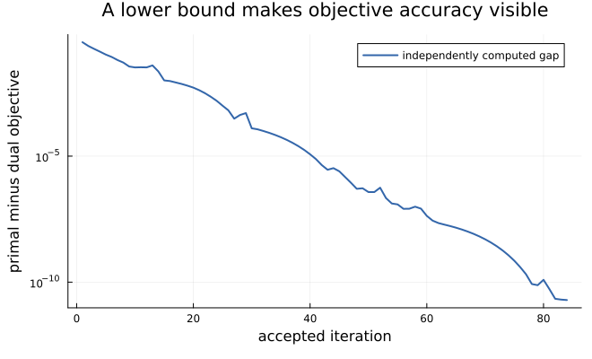

Duality and certificates
Prerequisites: KKT conditions and proximal-gradient traces.
After this chapter you can:
- Derive a lower bound on the optimal lasso objective.
- Construct a dual-feasible point from a residual.
- Use the primal-dual gap to distinguish objective accuracy from a small update.
A second optimization problem gives a lower bound
For s > 0 and lambda > 0, introduce r = y-X*beta into the lasso:
\[\min_{\beta,r}\quad \frac{s}{2}\|r\|_2^2+\lambda\|\beta\|_1 \quad\text{subject to}\quad r=y-X\beta.\]
Use a multiplier theta for y-X*beta-r = 0. Minimizing the Lagrangian over r gives r = theta/s and contribution -norm(theta)^2/(2s). Minimizing over each unrestricted coefficient is finite only if abs(X[:,j]'*theta) <= lambda: otherwise the linear term can outweigh its absolute-value penalty along an unbounded direction. The dual is therefore
\[\max_\theta\quad D(\theta)=y^\mathsf{T}\theta- \frac{\|\theta\|_2^2}{2s} \quad\text{subject to}\quad \|X^\mathsf{T}\theta\|_\infty\le\lambda.\]
For any coefficients beta and any dual-feasible theta, weak duality gives
\[0\le F(\beta)-F^*\le F(\beta)-D(\theta).\]
The last quantity is the primal-dual gap. A small positive gap bounds objective error without knowing an optimal coefficient vector. Weak duality and these Lagrangian steps are covered in Boyd and Vandenberghe, Chapter 5. The derivation uses the problem as stated; an unpenalized intercept would add another dual constraint.
Turn a residual into a feasible point
At a lasso optimum, the dual variable is s*(y-X*beta). At an arbitrary iterate that vector may violate a constraint, so scale it toward zero:
\[r=y-X\beta,\quad \kappa=\min\left(1,\frac{\lambda}{\|sX^\mathsf{T}r\|_\infty}\right),\quad \theta=\kappa sr.\]
Take kappa = 1 when the denominator is zero. The construction makes the dual constraints hold in exact arithmetic. A poor iterate still gives a valid mathematical lower bound; it simply tends to give a larger gap.
A related exact-arithmetic bound uses the minimal KKT residual G from Chapter 2. If k = norm(G, Inf)/lambda and F(beta) > 0, the same residual-based dual point obeys (F(beta)-D(theta))/F(beta) <= 2k+k^2. The complete assumptions and derivation are retained with the independent lasso gap bound.
Plot a gap along a solve
This example independently recomputes both objective terms from each stored iterate. The calculation is a numerical diagnostic: a formal certificate also needs control of arithmetic error and dual feasibility. Avoid interpreting a negative computed gap as being better than the mathematical optimum.
using LinearAlgebra, Random, ProximalBase, ProximalSolvers, Plots
rng = Xoshiro(71)
n, p = 80, 16
X = randn(rng, n, p)
for j in 2:p
X[:, j] .= 0.6 .* X[:, j-1] .+ 0.8 .* X[:, j]
end
y = X[:, 1:3] * [1.5, -1.0, 0.8] + 0.2 * randn(rng, n)
s, lambda = 1 / n, 0.06
function gap_from_data(beta)
residual = y - X * beta
gradient_norm = maximum(abs, s * X' * residual)
kappa = iszero(gradient_norm) ? 1.0 : min(1.0, lambda / gradient_norm)
theta = (kappa * s) .* residual
primal = s * sum(abs2, residual) / 2 + lambda * sum(abs, beta)
dual = dot(theta, y) - sum(abs2, theta) / (2s)
(; primal, dual, gap=primal-dual,
feasibility_excess=maximum(abs, X' * theta)-lambda)
end
beta = zeros(p)
options = ProximalOptions(maxiter=2000, ftol=1e-13, xtol=1e-12, gradtol=1e-10,
allow_f_increases=true, store_trace=true, extended_trace=true)
result = solve!(beta, s * LeastSquaresLoss(y, X), NormL1(lambda),
ProximalGradientDescent(), options)
checks = [gap_from_data(state.metadata["x"]) for state in result.trace]
final_check = gap_from_data(beta)
@assert final_check.gap >= -1e-10 * max(1.0, final_check.primal)
@assert final_check.gap < 1e-6 * max(1.0, final_check.primal)
@assert final_check.feasibility_excess < 1e-10
(; final_check..., converged=result.converged)(primal = 0.2038335891261911, dual = 0.20383358911403884, gap = 1.2152251427366423e-11, feasibility_excess = 0.0, converged = true)gap_plot = plot([state.iteration for state in result.trace],
max.([check.gap for check in checks], 1e-14);
label="independently computed gap", linewidth=2, color="#3366aa",
xlabel="accepted iteration", ylabel="primal minus dual objective",
yscale=:log10, title="A lower bound makes objective accuracy visible",
size=(660, 400))
savefig(gap_plot, "lasso-duality-gap.svg")
Only the plotted values are floored at 1e-14; the displayed result keeps the original gap and feasibility excess. The assumptions about trace storage and stopping are in the iteration contract and the stopping contract.
Square-root lasso has its own certificate
The square-root lasso example changes the loss and therefore the dual problem. Its solver has a specific certificate. After an uncertified change-test stop, it can try a bounded smoothing fallback. The smoothed problems propose candidate coefficients; certification and any proved improvement refer to the original square-root objective. Recovery at exact fits is not guaranteed, so the final result can still have converged=false and gap=NaN. The square-root certificate contract states the conditions and meaning of the gap field. Do not transfer the least-squares dual formula above to a different loss.
A certificate addresses an optimization question. It does not establish that the chosen statistical model or penalty predicts well, identifies causes, or recovers the true support. Those require separate modeling assumptions and validation data.
Exercises
- Verify dual feasibility of the scaled residual when its gradient norm is positive, and when it is zero.
- Why does
theta = 0always give a lower bound here? Why can it be a loose bound for a good fitted model? - Coding: use a
solve!trace and plot the change in objective next to the independently computed gap. Find an iteration where the two quantities have noticeably different scales. - The gap is small but two coefficient vectors differ greatly. Is that a contradiction? What additional curvature assumption would help control their distance to a unique optimum?
Exercise answers
- Scaling makes
norm(X'*theta, Inf)equal to at mostlambda. If the unscaled correlation is zero, no scaling is necessary. - Its correlations are all zero and
D(0)=0. A positive optimal objective can be far above zero, so this does not use much information from the fit. - The step-to-step change measures recent progress; the gap compares an upper bound with a lower bound at the current iterate. A flat trajectory alone does not prove a tight gap.
- No. Flat or nearly flat directions can permit very different coefficients with similar objectives. Strong convexity supplies a quadratic objective lower bound in distance to the unique minimizer.
Continue to floating-point case studies.